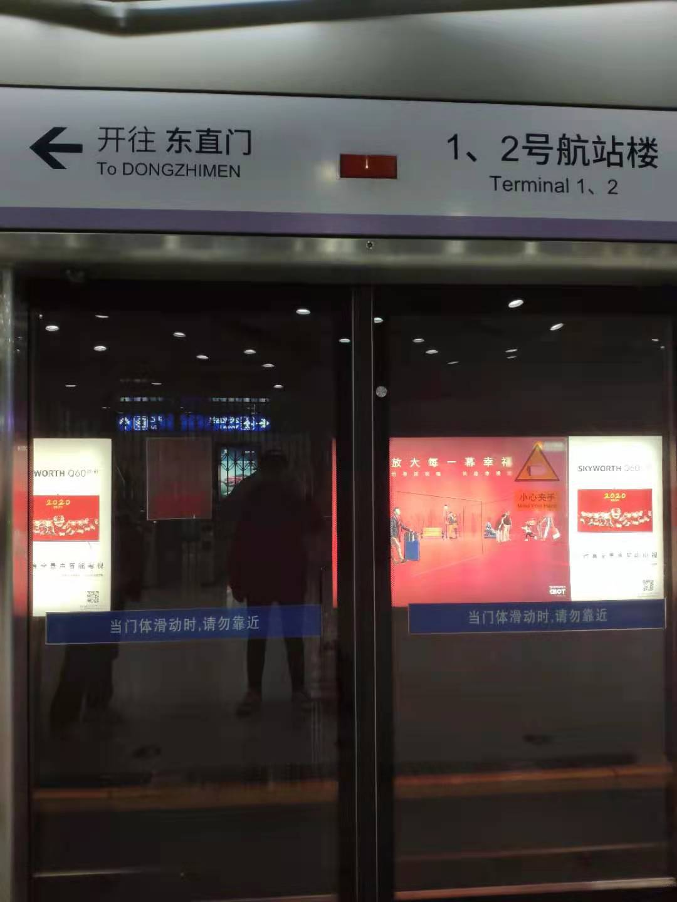
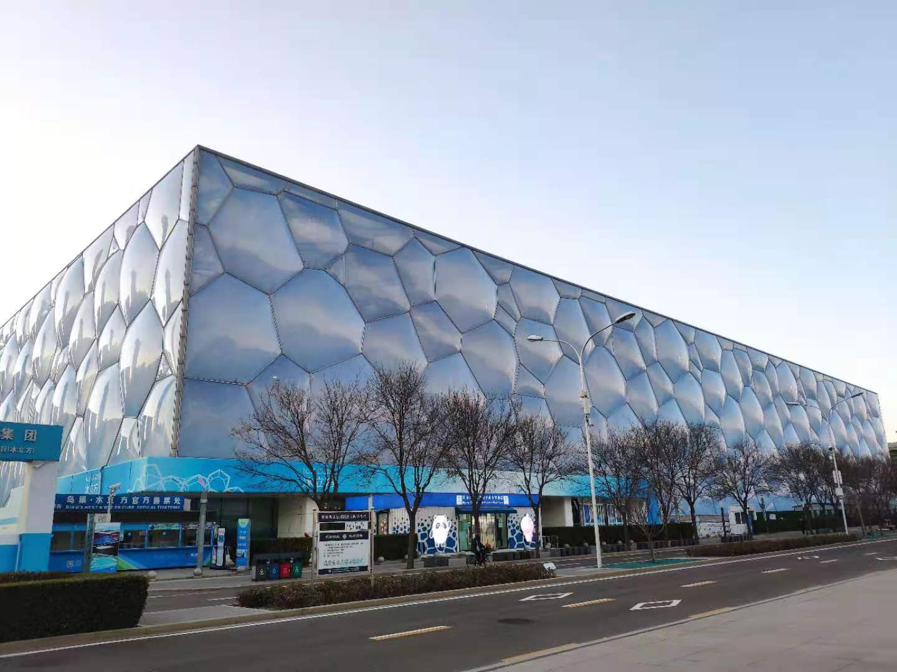

前言
临近毕业了，趁着室友强哥正好也有空，一起约了去北京玩一玩。从12.6到12.10，一共5天，每天平均3万步，走了很多地方，也算是挺充实的了。
足迹：
首都国际机场、大栅栏、圆明园、四季民福（和平里店）、后海美食街、南锣鼓巷、天安门广场、王府井、三里屯、鸟巢、水立方、蓝色港湾、故宫、天坛、德云社（新街口剧场）、八达岭长城、五道口、北京字节（泰鹏大厦）、中科院计算所。
第一天
早上8点的飞机，早早起了床就赶到了虹桥机场，两小时就到了。出了首都国际机场，直奔宾馆，因为天安门店和天安门广场店看错了，还跑错了地方。我们住的地方在杨梅竹斜街，胡同里老北京味很浓厚，就是房子看起来老破不堪，但是架不住地价贵啊，酸了。

到了宾馆后，直奔大栅栏，吃了顿新成炸酱面，味道还不错，据宣传历史挺悠久的，建国初期就开了。
然后就去了圆明园，现场买票即可。见到了近三年不见的老同学：微笑直到夕阳尽头，强哥也见到了他的女同学。圆明园有三个园，太大了只逛了一小部分，不过见到了只在教科书里见到的废墟。北京的冬天真冷啊，还是在郊外的园子里，差点没被冻死，手机还开了直播，手都要被冻坏了。
这天正好是我的农历生日，晚上我们四个人订了蛋糕，去吃了四季民福（和平里店），因为故宫店人太多了所以没去。 不得不说，第一次吃正宗的北京烤鸭，味道还真不错，价格也还好，人均才150。有一说一，这是长这么大第一次在外面过这么正式的生日吧，昶臻还给我唱了生日歌，感动了，上一次有人给我过生日应该还是前女友吧。

后来去逛了后海，晚上黑漆漆的，确实没啥意思。美食街，也就是酒吧街了，基本都是清吧。门口都是拉客的，最好不要进去，要去就去大众点评上评价最高的那几家。
顺道去了南锣鼓巷，建议白天去，晚上黑漆漆的，就中间一条胡同能逛。店的话还可以吧，吃了杯双皮奶，一般。有很多老北京风味的老店，不过都不是很感兴趣，没有什么特别想买的东西。
第二天
大栅栏找了家包子店吃了早餐，挺贵的，不过味道尚可，最重要的是量挺大，管饱。
然后顺路去了趟天安门广场，安检特别严格，排队就排了很久。第一次见到从小只在电视上见过的天安门，心里还是非常激动的。
然后去了王府井，这条街不是很长，没有想象中的那么热闹，可能是因为工作日，人比较稀少。但是和南京东路比的话，也感觉差了点热闹和繁华。
接着去了据说美女很多的三里屯，结果还是大失所望，工作日白天都没啥人，让我感觉像是冷清的商场。所以建议还是周末的晚上来，据说还会有好戏看（未成年人莫入），不过我这次是没有机会见到了，下次一定。
午饭在三里屯吃了一家潇湘阁，真的非常下饭，强烈推荐，人均70左右。
下午就去了鸟巢、水立方，现场买票就行了。当然如果你不需要进水立方里面看，就不需要买票，外面拍拍照就行了。水立方里面也没啥好看的，所以建议别买票进去了。

晚上去了传说中夜景很好看的蓝色港湾，不得不说，真的很好看。但是强哥要和他女同学约去吃饭了，我就自己吃了麦当劳。
晚上的杨梅竹斜街别有一番风味，人很少，很安静。
第三天
早饭试了试大栅栏的狗不理包子，如网上流传那样，差评，又贵又一般。
然后就去了故宫，需要提前一天在网上预约，同样需要过严格的安检。故宫很大，所有宫逛下来需要小半天时间。这次唯一的购物也是在故宫里产生的，买了三个香囊，太喜欢这外观了，我真是少女心爆棚。
接着就直奔天坛，在附近吃了顿肯德基，还冲了200块会员卡，送了一堆券，回去一定要记得用！白嫖了一顿半价生日套餐，还没吃过这么便宜的一顿KFC。天坛同样需要提前一天网上预约，里面也非常大，逛了整整一下午。还是非常壮观的，其实就是一个公园，散步养心非常不错。
晚上去听了德云社（新街口剧场），附近吃了顿川湘菜。德云社不允许自带酒水，但是里面的酒水超级超级贵，最便宜的30块一杯，建议别买。我们买的位置还很垃圾，价格还是最贵的。相声的话，大咖你是别想见到了，都是小辈，不过效果还行吧，除了一两个相声笑点比较多以外，其他的一般般。

第四天
这一天全部用来去爬八达岭长城了，需要提前网上预约。前门站坐旅游公交1线，来回40元。记得带点吃的喝的，长城那边很贵。长城分为南北两线，南线7阁楼，没啥意思，走个几十米看个好汉碑就完事了，北线8个楼，建议走到底。如果爬不动可以直接坐缆车，直接到北线6楼。我们先去了南线3楼，然后折返，一路走到北线8楼，差点没累死。最后还是乖乖坐缆车下来了，单程100，往返便宜一点。
太累了，这一天就没去其他地方了，晚上在杨梅竹斜街随便逛了逛，吃了顿铃木食堂，点评评价很高，人均八九十吧。
第五天
直奔五道口，见到了快7年没见的高中老同学：昌老师和奕哥，吃了顿日昌餐馆。然后去北京字节（泰鹏大厦）工区转了转，最后去中科院计算所转了转，还瞻仰了部门leader求学时的真迹。
最后大兴机场回了浦东机场，一路上是真的累。
后记
五天的时间过得很快，其实大部分地方也都逛完了，其他还有例如北海公园、景山公园、CBD等等地方还没有去，下次有机会出差再去玩玩吧。
这几天对北京的感受呢，可能是因为工作日加上旅游淡季，游人非常稀少，去哪里都不需要排队，感觉冷冷清清。晚上的话到处黑漆漆的，很安静，挺舒服的，想让人早睡。不过整体上来看，我还是更喜欢上海，喜欢这里的夜生活，喜欢热闹。
下一次和老朋友们再见又不知道是什么时候了，下一次应该就是工作了之后了。当然游戏中还是经常会遇见的，该喷还是得喷。
这次总共算下来一人花了2500左右，还是挺实惠的，每天走的都很累，但是都很充实。下周开始又要上班了，继续做一个快乐的打工人，加油！毕业论文也要着手开始写了，希望能顺利毕业。